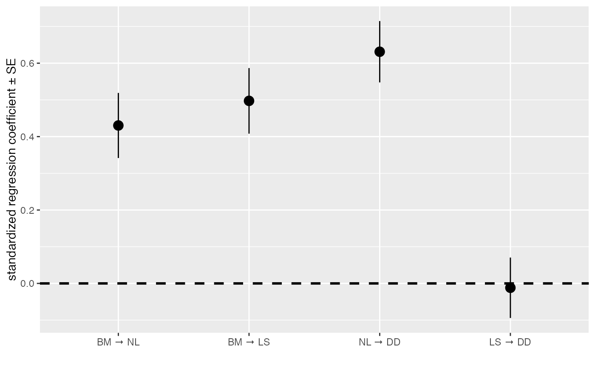

Plot path coefficients and their confidence intervals or standard errors.
coef_plot.RdPlot path coefficients and their confidence intervals or standard errors.
coef_plot(fitted_DAG, error_bar = "ci", order_by = "default", from = NULL, to = NULL, reverse_order = FALSE)
Arguments
| fitted_DAG | A fitted DAG, usually obtained by |
|---|---|
| error_bar | Whether to use confidence intervals ( |
| order_by | By |
| from | Only show path coefficients from these nodes. Supply as a character vector. |
| to | Only show path coefficients to these nodes. Supply as a character vector. |
| reverse_order | If |
Value
A ggplot object.
Examples
coef_plot(d_fitted)#> #> #>#> Warning: conversion failure on 'BM → NL' in 'mbcsToSbcs': dot substituted for <e2>#> Warning: conversion failure on 'BM → NL' in 'mbcsToSbcs': dot substituted for <86>#> Warning: conversion failure on 'BM → NL' in 'mbcsToSbcs': dot substituted for <92>#> Warning: conversion failure on 'BM → LS' in 'mbcsToSbcs': dot substituted for <e2>#> Warning: conversion failure on 'BM → LS' in 'mbcsToSbcs': dot substituted for <86>#> Warning: conversion failure on 'BM → LS' in 'mbcsToSbcs': dot substituted for <92>#> Warning: conversion failure on 'NL → DD' in 'mbcsToSbcs': dot substituted for <e2>#> Warning: conversion failure on 'NL → DD' in 'mbcsToSbcs': dot substituted for <86>#> Warning: conversion failure on 'NL → DD' in 'mbcsToSbcs': dot substituted for <92>#> Warning: conversion failure on 'LS → DD' in 'mbcsToSbcs': dot substituted for <e2>#> Warning: conversion failure on 'LS → DD' in 'mbcsToSbcs': dot substituted for <86>#> Warning: conversion failure on 'LS → DD' in 'mbcsToSbcs': dot substituted for <92>#> Warning: conversion failure on 'BM → NL' in 'mbcsToSbcs': dot substituted for <e2>#> Warning: conversion failure on 'BM → NL' in 'mbcsToSbcs': dot substituted for <86>#> Warning: conversion failure on 'BM → NL' in 'mbcsToSbcs': dot substituted for <92>#> Warning: conversion failure on 'BM → LS' in 'mbcsToSbcs': dot substituted for <e2>#> Warning: conversion failure on 'BM → LS' in 'mbcsToSbcs': dot substituted for <86>#> Warning: conversion failure on 'BM → LS' in 'mbcsToSbcs': dot substituted for <92>#> Warning: conversion failure on 'NL → DD' in 'mbcsToSbcs': dot substituted for <e2>#> Warning: conversion failure on 'NL → DD' in 'mbcsToSbcs': dot substituted for <86>#> Warning: conversion failure on 'NL → DD' in 'mbcsToSbcs': dot substituted for <92>#> Warning: conversion failure on 'LS → DD' in 'mbcsToSbcs': dot substituted for <e2>#> Warning: conversion failure on 'LS → DD' in 'mbcsToSbcs': dot substituted for <86>#> Warning: conversion failure on 'LS → DD' in 'mbcsToSbcs': dot substituted for <92>#> Warning: conversion failure on 'BM → NL' in 'mbcsToSbcs': dot substituted for <e2>#> Warning: conversion failure on 'BM → NL' in 'mbcsToSbcs': dot substituted for <86>#> Warning: conversion failure on 'BM → NL' in 'mbcsToSbcs': dot substituted for <92>#> Warning: conversion failure on 'BM → LS' in 'mbcsToSbcs': dot substituted for <e2>#> Warning: conversion failure on 'BM → LS' in 'mbcsToSbcs': dot substituted for <86>#> Warning: conversion failure on 'BM → LS' in 'mbcsToSbcs': dot substituted for <92>#> Warning: conversion failure on 'NL → DD' in 'mbcsToSbcs': dot substituted for <e2>#> Warning: conversion failure on 'NL → DD' in 'mbcsToSbcs': dot substituted for <86>#> Warning: conversion failure on 'NL → DD' in 'mbcsToSbcs': dot substituted for <92>#> Warning: conversion failure on 'LS → DD' in 'mbcsToSbcs': dot substituted for <e2>#> Warning: conversion failure on 'LS → DD' in 'mbcsToSbcs': dot substituted for <86>#> Warning: conversion failure on 'LS → DD' in 'mbcsToSbcs': dot substituted for <92>#> Warning: conversion failure on 'BM → NL' in 'mbcsToSbcs': dot substituted for <e2>#> Warning: conversion failure on 'BM → NL' in 'mbcsToSbcs': dot substituted for <86>#> Warning: conversion failure on 'BM → NL' in 'mbcsToSbcs': dot substituted for <92>#> Warning: conversion failure on 'BM → LS' in 'mbcsToSbcs': dot substituted for <e2>#> Warning: conversion failure on 'BM → LS' in 'mbcsToSbcs': dot substituted for <86>#> Warning: conversion failure on 'BM → LS' in 'mbcsToSbcs': dot substituted for <92>#> Warning: conversion failure on 'NL → DD' in 'mbcsToSbcs': dot substituted for <e2>#> Warning: conversion failure on 'NL → DD' in 'mbcsToSbcs': dot substituted for <86>#> Warning: conversion failure on 'NL → DD' in 'mbcsToSbcs': dot substituted for <92>#> Warning: conversion failure on 'LS → DD' in 'mbcsToSbcs': dot substituted for <e2>#> Warning: conversion failure on 'LS → DD' in 'mbcsToSbcs': dot substituted for <86>#> Warning: conversion failure on 'LS → DD' in 'mbcsToSbcs': dot substituted for <92>#> Warning: conversion failure on 'BM → NL' in 'mbcsToSbcs': dot substituted for <e2>#> Warning: conversion failure on 'BM → NL' in 'mbcsToSbcs': dot substituted for <86>#> Warning: conversion failure on 'BM → NL' in 'mbcsToSbcs': dot substituted for <92>#> Warning: conversion failure on 'BM → LS' in 'mbcsToSbcs': dot substituted for <e2>#> Warning: conversion failure on 'BM → LS' in 'mbcsToSbcs': dot substituted for <86>#> Warning: conversion failure on 'BM → LS' in 'mbcsToSbcs': dot substituted for <92>#> Warning: conversion failure on 'NL → DD' in 'mbcsToSbcs': dot substituted for <e2>#> Warning: conversion failure on 'NL → DD' in 'mbcsToSbcs': dot substituted for <86>#> Warning: conversion failure on 'NL → DD' in 'mbcsToSbcs': dot substituted for <92>#> Warning: conversion failure on 'LS → DD' in 'mbcsToSbcs': dot substituted for <e2>#> Warning: conversion failure on 'LS → DD' in 'mbcsToSbcs': dot substituted for <86>#> Warning: conversion failure on 'LS → DD' in 'mbcsToSbcs': dot substituted for <92>#> Warning: conversion failure on 'BM → NL' in 'mbcsToSbcs': dot substituted for <e2>#> Warning: conversion failure on 'BM → NL' in 'mbcsToSbcs': dot substituted for <86>#> Warning: conversion failure on 'BM → NL' in 'mbcsToSbcs': dot substituted for <92>#> Warning: conversion failure on 'BM → LS' in 'mbcsToSbcs': dot substituted for <e2>#> Warning: conversion failure on 'BM → LS' in 'mbcsToSbcs': dot substituted for <86>#> Warning: conversion failure on 'BM → LS' in 'mbcsToSbcs': dot substituted for <92>#> Warning: conversion failure on 'NL → DD' in 'mbcsToSbcs': dot substituted for <e2>#> Warning: conversion failure on 'NL → DD' in 'mbcsToSbcs': dot substituted for <86>#> Warning: conversion failure on 'NL → DD' in 'mbcsToSbcs': dot substituted for <92>#> Warning: conversion failure on 'LS → DD' in 'mbcsToSbcs': dot substituted for <e2>#> Warning: conversion failure on 'LS → DD' in 'mbcsToSbcs': dot substituted for <86>#> Warning: conversion failure on 'LS → DD' in 'mbcsToSbcs': dot substituted for <92>#> Warning: conversion failure on 'BM → NL' in 'mbcsToSbcs': dot substituted for <e2>#> Warning: conversion failure on 'BM → NL' in 'mbcsToSbcs': dot substituted for <86>#> Warning: conversion failure on 'BM → NL' in 'mbcsToSbcs': dot substituted for <92>#> Warning: conversion failure on 'BM → LS' in 'mbcsToSbcs': dot substituted for <e2>#> Warning: conversion failure on 'BM → LS' in 'mbcsToSbcs': dot substituted for <86>#> Warning: conversion failure on 'BM → LS' in 'mbcsToSbcs': dot substituted for <92>#> Warning: conversion failure on 'NL → DD' in 'mbcsToSbcs': dot substituted for <e2>#> Warning: conversion failure on 'NL → DD' in 'mbcsToSbcs': dot substituted for <86>#> Warning: conversion failure on 'NL → DD' in 'mbcsToSbcs': dot substituted for <92>#> Warning: conversion failure on 'LS → DD' in 'mbcsToSbcs': dot substituted for <e2>#> Warning: conversion failure on 'LS → DD' in 'mbcsToSbcs': dot substituted for <86>#> Warning: conversion failure on 'LS → DD' in 'mbcsToSbcs': dot substituted for <92>#> Warning: conversion failure on 'BM → NL' in 'mbcsToSbcs': dot substituted for <e2>#> Warning: conversion failure on 'BM → NL' in 'mbcsToSbcs': dot substituted for <86>#> Warning: conversion failure on 'BM → NL' in 'mbcsToSbcs': dot substituted for <92>#> Warning: conversion failure on 'BM → LS' in 'mbcsToSbcs': dot substituted for <e2>#> Warning: conversion failure on 'BM → LS' in 'mbcsToSbcs': dot substituted for <86>#> Warning: conversion failure on 'BM → LS' in 'mbcsToSbcs': dot substituted for <92>#> Warning: conversion failure on 'NL → DD' in 'mbcsToSbcs': dot substituted for <e2>#> Warning: conversion failure on 'NL → DD' in 'mbcsToSbcs': dot substituted for <86>#> Warning: conversion failure on 'NL → DD' in 'mbcsToSbcs': dot substituted for <92>#> Warning: conversion failure on 'LS → DD' in 'mbcsToSbcs': dot substituted for <e2>#> Warning: conversion failure on 'LS → DD' in 'mbcsToSbcs': dot substituted for <86>#> Warning: conversion failure on 'LS → DD' in 'mbcsToSbcs': dot substituted for <92>#> Warning: conversion failure on 'BM → NL' in 'mbcsToSbcs': dot substituted for <e2>#> Warning: conversion failure on 'BM → NL' in 'mbcsToSbcs': dot substituted for <86>#> Warning: conversion failure on 'BM → NL' in 'mbcsToSbcs': dot substituted for <92>#> Warning: conversion failure on 'BM → LS' in 'mbcsToSbcs': dot substituted for <e2>#> Warning: conversion failure on 'BM → LS' in 'mbcsToSbcs': dot substituted for <86>#> Warning: conversion failure on 'BM → LS' in 'mbcsToSbcs': dot substituted for <92>#> Warning: conversion failure on 'NL → DD' in 'mbcsToSbcs': dot substituted for <e2>#> Warning: conversion failure on 'NL → DD' in 'mbcsToSbcs': dot substituted for <86>#> Warning: conversion failure on 'NL → DD' in 'mbcsToSbcs': dot substituted for <92>#> Warning: conversion failure on 'LS → DD' in 'mbcsToSbcs': dot substituted for <e2>#> Warning: conversion failure on 'LS → DD' in 'mbcsToSbcs': dot substituted for <86>#> Warning: conversion failure on 'LS → DD' in 'mbcsToSbcs': dot substituted for <92>#> Warning: conversion failure on 'BM → NL' in 'mbcsToSbcs': dot substituted for <e2>#> Warning: conversion failure on 'BM → NL' in 'mbcsToSbcs': dot substituted for <86>#> Warning: conversion failure on 'BM → NL' in 'mbcsToSbcs': dot substituted for <92>#> Warning: conversion failure on 'BM → LS' in 'mbcsToSbcs': dot substituted for <e2>#> Warning: conversion failure on 'BM → LS' in 'mbcsToSbcs': dot substituted for <86>#> Warning: conversion failure on 'BM → LS' in 'mbcsToSbcs': dot substituted for <92>#> Warning: conversion failure on 'NL → DD' in 'mbcsToSbcs': dot substituted for <e2>#> Warning: conversion failure on 'NL → DD' in 'mbcsToSbcs': dot substituted for <86>#> Warning: conversion failure on 'NL → DD' in 'mbcsToSbcs': dot substituted for <92>#> Warning: conversion failure on 'LS → DD' in 'mbcsToSbcs': dot substituted for <e2>#> Warning: conversion failure on 'LS → DD' in 'mbcsToSbcs': dot substituted for <86>#> Warning: conversion failure on 'LS → DD' in 'mbcsToSbcs': dot substituted for <92>#> Warning: conversion failure on 'BM → NL' in 'mbcsToSbcs': dot substituted for <e2>#> Warning: conversion failure on 'BM → NL' in 'mbcsToSbcs': dot substituted for <86>#> Warning: conversion failure on 'BM → NL' in 'mbcsToSbcs': dot substituted for <92>#> Warning: conversion failure on 'BM → LS' in 'mbcsToSbcs': dot substituted for <e2>#> Warning: conversion failure on 'BM → LS' in 'mbcsToSbcs': dot substituted for <86>#> Warning: conversion failure on 'BM → LS' in 'mbcsToSbcs': dot substituted for <92>#> Warning: conversion failure on 'NL → DD' in 'mbcsToSbcs': dot substituted for <e2>#> Warning: conversion failure on 'NL → DD' in 'mbcsToSbcs': dot substituted for <86>#> Warning: conversion failure on 'NL → DD' in 'mbcsToSbcs': dot substituted for <92>#> Warning: conversion failure on 'LS → DD' in 'mbcsToSbcs': dot substituted for <e2>#> Warning: conversion failure on 'LS → DD' in 'mbcsToSbcs': dot substituted for <86>#> Warning: conversion failure on 'LS → DD' in 'mbcsToSbcs': dot substituted for <92>#> Warning: conversion failure on 'BM → NL' in 'mbcsToSbcs': dot substituted for <e2>#> Warning: conversion failure on 'BM → NL' in 'mbcsToSbcs': dot substituted for <86>#> Warning: conversion failure on 'BM → NL' in 'mbcsToSbcs': dot substituted for <92>#> Warning: conversion failure on 'BM → LS' in 'mbcsToSbcs': dot substituted for <e2>#> Warning: conversion failure on 'BM → LS' in 'mbcsToSbcs': dot substituted for <86>#> Warning: conversion failure on 'BM → LS' in 'mbcsToSbcs': dot substituted for <92>#> Warning: conversion failure on 'NL → DD' in 'mbcsToSbcs': dot substituted for <e2>#> Warning: conversion failure on 'NL → DD' in 'mbcsToSbcs': dot substituted for <86>#> Warning: conversion failure on 'NL → DD' in 'mbcsToSbcs': dot substituted for <92>#> Warning: conversion failure on 'LS → DD' in 'mbcsToSbcs': dot substituted for <e2>#> Warning: conversion failure on 'LS → DD' in 'mbcsToSbcs': dot substituted for <86>#> Warning: conversion failure on 'LS → DD' in 'mbcsToSbcs': dot substituted for <92>#> Warning: conversion failure on 'BM → NL' in 'mbcsToSbcs': dot substituted for <e2>#> Warning: conversion failure on 'BM → NL' in 'mbcsToSbcs': dot substituted for <86>#> Warning: conversion failure on 'BM → NL' in 'mbcsToSbcs': dot substituted for <92>#> Warning: conversion failure on 'BM → LS' in 'mbcsToSbcs': dot substituted for <e2>#> Warning: conversion failure on 'BM → LS' in 'mbcsToSbcs': dot substituted for <86>#> Warning: conversion failure on 'BM → LS' in 'mbcsToSbcs': dot substituted for <92>#> Warning: conversion failure on 'NL → DD' in 'mbcsToSbcs': dot substituted for <e2>#> Warning: conversion failure on 'NL → DD' in 'mbcsToSbcs': dot substituted for <86>#> Warning: conversion failure on 'NL → DD' in 'mbcsToSbcs': dot substituted for <92>#> Warning: conversion failure on 'LS → DD' in 'mbcsToSbcs': dot substituted for <e2>#> Warning: conversion failure on 'LS → DD' in 'mbcsToSbcs': dot substituted for <86>#> Warning: conversion failure on 'LS → DD' in 'mbcsToSbcs': dot substituted for <92>#> Warning: conversion failure on 'BM → NL' in 'mbcsToSbcs': dot substituted for <e2>#> Warning: conversion failure on 'BM → NL' in 'mbcsToSbcs': dot substituted for <86>#> Warning: conversion failure on 'BM → NL' in 'mbcsToSbcs': dot substituted for <92>#> Warning: conversion failure on 'BM → LS' in 'mbcsToSbcs': dot substituted for <e2>#> Warning: conversion failure on 'BM → LS' in 'mbcsToSbcs': dot substituted for <86>#> Warning: conversion failure on 'BM → LS' in 'mbcsToSbcs': dot substituted for <92>#> Warning: conversion failure on 'NL → DD' in 'mbcsToSbcs': dot substituted for <e2>#> Warning: conversion failure on 'NL → DD' in 'mbcsToSbcs': dot substituted for <86>#> Warning: conversion failure on 'NL → DD' in 'mbcsToSbcs': dot substituted for <92>#> Warning: conversion failure on 'LS → DD' in 'mbcsToSbcs': dot substituted for <e2>#> Warning: conversion failure on 'LS → DD' in 'mbcsToSbcs': dot substituted for <86>#> Warning: conversion failure on 'LS → DD' in 'mbcsToSbcs': dot substituted for <92># to create a horizontal version, use this: coef_plot(d_fitted, reverse_order = TRUE) + ggplot2::coord_flip()#> #> #>#> Warning: conversion failure on 'LS → DD' in 'mbcsToSbcs': dot substituted for <e2>#> Warning: conversion failure on 'LS → DD' in 'mbcsToSbcs': dot substituted for <86>#> Warning: conversion failure on 'LS → DD' in 'mbcsToSbcs': dot substituted for <92>#> Warning: conversion failure on 'NL → DD' in 'mbcsToSbcs': dot substituted for <e2>#> Warning: conversion failure on 'NL → DD' in 'mbcsToSbcs': dot substituted for <86>#> Warning: conversion failure on 'NL → DD' in 'mbcsToSbcs': dot substituted for <92>#> Warning: conversion failure on 'BM → LS' in 'mbcsToSbcs': dot substituted for <e2>#> Warning: conversion failure on 'BM → LS' in 'mbcsToSbcs': dot substituted for <86>#> Warning: conversion failure on 'BM → LS' in 'mbcsToSbcs': dot substituted for <92>#> Warning: conversion failure on 'BM → NL' in 'mbcsToSbcs': dot substituted for <e2>#> Warning: conversion failure on 'BM → NL' in 'mbcsToSbcs': dot substituted for <86>#> Warning: conversion failure on 'BM → NL' in 'mbcsToSbcs': dot substituted for <92>#> Warning: conversion failure on 'LS → DD' in 'mbcsToSbcs': dot substituted for <e2>#> Warning: conversion failure on 'LS → DD' in 'mbcsToSbcs': dot substituted for <86>#> Warning: conversion failure on 'LS → DD' in 'mbcsToSbcs': dot substituted for <92>#> Warning: conversion failure on 'NL → DD' in 'mbcsToSbcs': dot substituted for <e2>#> Warning: conversion failure on 'NL → DD' in 'mbcsToSbcs': dot substituted for <86>#> Warning: conversion failure on 'NL → DD' in 'mbcsToSbcs': dot substituted for <92>#> Warning: conversion failure on 'BM → LS' in 'mbcsToSbcs': dot substituted for <e2>#> Warning: conversion failure on 'BM → LS' in 'mbcsToSbcs': dot substituted for <86>#> Warning: conversion failure on 'BM → LS' in 'mbcsToSbcs': dot substituted for <92>#> Warning: conversion failure on 'BM → NL' in 'mbcsToSbcs': dot substituted for <e2>#> Warning: conversion failure on 'BM → NL' in 'mbcsToSbcs': dot substituted for <86>#> Warning: conversion failure on 'BM → NL' in 'mbcsToSbcs': dot substituted for <92>#> Warning: conversion failure on 'LS → DD' in 'mbcsToSbcs': dot substituted for <e2>#> Warning: conversion failure on 'LS → DD' in 'mbcsToSbcs': dot substituted for <86>#> Warning: conversion failure on 'LS → DD' in 'mbcsToSbcs': dot substituted for <92>#> Warning: conversion failure on 'NL → DD' in 'mbcsToSbcs': dot substituted for <e2>#> Warning: conversion failure on 'NL → DD' in 'mbcsToSbcs': dot substituted for <86>#> Warning: conversion failure on 'NL → DD' in 'mbcsToSbcs': dot substituted for <92>#> Warning: conversion failure on 'BM → LS' in 'mbcsToSbcs': dot substituted for <e2>#> Warning: conversion failure on 'BM → LS' in 'mbcsToSbcs': dot substituted for <86>#> Warning: conversion failure on 'BM → LS' in 'mbcsToSbcs': dot substituted for <92>#> Warning: conversion failure on 'BM → NL' in 'mbcsToSbcs': dot substituted for <e2>#> Warning: conversion failure on 'BM → NL' in 'mbcsToSbcs': dot substituted for <86>#> Warning: conversion failure on 'BM → NL' in 'mbcsToSbcs': dot substituted for <92>#> Warning: conversion failure on 'LS → DD' in 'mbcsToSbcs': dot substituted for <e2>#> Warning: conversion failure on 'LS → DD' in 'mbcsToSbcs': dot substituted for <86>#> Warning: conversion failure on 'LS → DD' in 'mbcsToSbcs': dot substituted for <92>#> Warning: conversion failure on 'NL → DD' in 'mbcsToSbcs': dot substituted for <e2>#> Warning: conversion failure on 'NL → DD' in 'mbcsToSbcs': dot substituted for <86>#> Warning: conversion failure on 'NL → DD' in 'mbcsToSbcs': dot substituted for <92>#> Warning: conversion failure on 'BM → LS' in 'mbcsToSbcs': dot substituted for <e2>#> Warning: conversion failure on 'BM → LS' in 'mbcsToSbcs': dot substituted for <86>#> Warning: conversion failure on 'BM → LS' in 'mbcsToSbcs': dot substituted for <92>#> Warning: conversion failure on 'BM → NL' in 'mbcsToSbcs': dot substituted for <e2>#> Warning: conversion failure on 'BM → NL' in 'mbcsToSbcs': dot substituted for <86>#> Warning: conversion failure on 'BM → NL' in 'mbcsToSbcs': dot substituted for <92>#> Warning: conversion failure on 'LS → DD' in 'mbcsToSbcs': dot substituted for <e2>#> Warning: conversion failure on 'LS → DD' in 'mbcsToSbcs': dot substituted for <86>#> Warning: conversion failure on 'LS → DD' in 'mbcsToSbcs': dot substituted for <92>#> Warning: conversion failure on 'NL → DD' in 'mbcsToSbcs': dot substituted for <e2>#> Warning: conversion failure on 'NL → DD' in 'mbcsToSbcs': dot substituted for <86>#> Warning: conversion failure on 'NL → DD' in 'mbcsToSbcs': dot substituted for <92>#> Warning: conversion failure on 'BM → LS' in 'mbcsToSbcs': dot substituted for <e2>#> Warning: conversion failure on 'BM → LS' in 'mbcsToSbcs': dot substituted for <86>#> Warning: conversion failure on 'BM → LS' in 'mbcsToSbcs': dot substituted for <92>#> Warning: conversion failure on 'BM → NL' in 'mbcsToSbcs': dot substituted for <e2>#> Warning: conversion failure on 'BM → NL' in 'mbcsToSbcs': dot substituted for <86>#> Warning: conversion failure on 'BM → NL' in 'mbcsToSbcs': dot substituted for <92>#> Warning: conversion failure on 'LS → DD' in 'mbcsToSbcs': dot substituted for <e2>#> Warning: conversion failure on 'LS → DD' in 'mbcsToSbcs': dot substituted for <86>#> Warning: conversion failure on 'LS → DD' in 'mbcsToSbcs': dot substituted for <92>#> Warning: conversion failure on 'NL → DD' in 'mbcsToSbcs': dot substituted for <e2>#> Warning: conversion failure on 'NL → DD' in 'mbcsToSbcs': dot substituted for <86>#> Warning: conversion failure on 'NL → DD' in 'mbcsToSbcs': dot substituted for <92>#> Warning: conversion failure on 'BM → LS' in 'mbcsToSbcs': dot substituted for <e2>#> Warning: conversion failure on 'BM → LS' in 'mbcsToSbcs': dot substituted for <86>#> Warning: conversion failure on 'BM → LS' in 'mbcsToSbcs': dot substituted for <92>#> Warning: conversion failure on 'BM → NL' in 'mbcsToSbcs': dot substituted for <e2>#> Warning: conversion failure on 'BM → NL' in 'mbcsToSbcs': dot substituted for <86>#> Warning: conversion failure on 'BM → NL' in 'mbcsToSbcs': dot substituted for <92>#> Warning: conversion failure on 'LS → DD' in 'mbcsToSbcs': dot substituted for <e2>#> Warning: conversion failure on 'LS → DD' in 'mbcsToSbcs': dot substituted for <86>#> Warning: conversion failure on 'LS → DD' in 'mbcsToSbcs': dot substituted for <92>#> Warning: conversion failure on 'NL → DD' in 'mbcsToSbcs': dot substituted for <e2>#> Warning: conversion failure on 'NL → DD' in 'mbcsToSbcs': dot substituted for <86>#> Warning: conversion failure on 'NL → DD' in 'mbcsToSbcs': dot substituted for <92>#> Warning: conversion failure on 'BM → LS' in 'mbcsToSbcs': dot substituted for <e2>#> Warning: conversion failure on 'BM → LS' in 'mbcsToSbcs': dot substituted for <86>#> Warning: conversion failure on 'BM → LS' in 'mbcsToSbcs': dot substituted for <92>#> Warning: conversion failure on 'BM → NL' in 'mbcsToSbcs': dot substituted for <e2>#> Warning: conversion failure on 'BM → NL' in 'mbcsToSbcs': dot substituted for <86>#> Warning: conversion failure on 'BM → NL' in 'mbcsToSbcs': dot substituted for <92>#> Warning: conversion failure on 'LS → DD' in 'mbcsToSbcs': dot substituted for <e2>#> Warning: conversion failure on 'LS → DD' in 'mbcsToSbcs': dot substituted for <86>#> Warning: conversion failure on 'LS → DD' in 'mbcsToSbcs': dot substituted for <92>#> Warning: conversion failure on 'NL → DD' in 'mbcsToSbcs': dot substituted for <e2>#> Warning: conversion failure on 'NL → DD' in 'mbcsToSbcs': dot substituted for <86>#> Warning: conversion failure on 'NL → DD' in 'mbcsToSbcs': dot substituted for <92>#> Warning: conversion failure on 'BM → LS' in 'mbcsToSbcs': dot substituted for <e2>#> Warning: conversion failure on 'BM → LS' in 'mbcsToSbcs': dot substituted for <86>#> Warning: conversion failure on 'BM → LS' in 'mbcsToSbcs': dot substituted for <92>#> Warning: conversion failure on 'BM → NL' in 'mbcsToSbcs': dot substituted for <e2>#> Warning: conversion failure on 'BM → NL' in 'mbcsToSbcs': dot substituted for <86>#> Warning: conversion failure on 'BM → NL' in 'mbcsToSbcs': dot substituted for <92>#> Warning: conversion failure on 'LS → DD' in 'mbcsToSbcs': dot substituted for <e2>#> Warning: conversion failure on 'LS → DD' in 'mbcsToSbcs': dot substituted for <86>#> Warning: conversion failure on 'LS → DD' in 'mbcsToSbcs': dot substituted for <92>#> Warning: conversion failure on 'NL → DD' in 'mbcsToSbcs': dot substituted for <e2>#> Warning: conversion failure on 'NL → DD' in 'mbcsToSbcs': dot substituted for <86>#> Warning: conversion failure on 'NL → DD' in 'mbcsToSbcs': dot substituted for <92>#> Warning: conversion failure on 'BM → LS' in 'mbcsToSbcs': dot substituted for <e2>#> Warning: conversion failure on 'BM → LS' in 'mbcsToSbcs': dot substituted for <86>#> Warning: conversion failure on 'BM → LS' in 'mbcsToSbcs': dot substituted for <92>#> Warning: conversion failure on 'BM → NL' in 'mbcsToSbcs': dot substituted for <e2>#> Warning: conversion failure on 'BM → NL' in 'mbcsToSbcs': dot substituted for <86>#> Warning: conversion failure on 'BM → NL' in 'mbcsToSbcs': dot substituted for <92>#> Warning: conversion failure on 'LS → DD' in 'mbcsToSbcs': dot substituted for <e2>#> Warning: conversion failure on 'LS → DD' in 'mbcsToSbcs': dot substituted for <86>#> Warning: conversion failure on 'LS → DD' in 'mbcsToSbcs': dot substituted for <92>#> Warning: conversion failure on 'NL → DD' in 'mbcsToSbcs': dot substituted for <e2>#> Warning: conversion failure on 'NL → DD' in 'mbcsToSbcs': dot substituted for <86>#> Warning: conversion failure on 'NL → DD' in 'mbcsToSbcs': dot substituted for <92>#> Warning: conversion failure on 'BM → LS' in 'mbcsToSbcs': dot substituted for <e2>#> Warning: conversion failure on 'BM → LS' in 'mbcsToSbcs': dot substituted for <86>#> Warning: conversion failure on 'BM → LS' in 'mbcsToSbcs': dot substituted for <92>#> Warning: conversion failure on 'BM → NL' in 'mbcsToSbcs': dot substituted for <e2>#> Warning: conversion failure on 'BM → NL' in 'mbcsToSbcs': dot substituted for <86>#> Warning: conversion failure on 'BM → NL' in 'mbcsToSbcs': dot substituted for <92>#> Warning: conversion failure on 'LS → DD' in 'mbcsToSbcs': dot substituted for <e2>#> Warning: conversion failure on 'LS → DD' in 'mbcsToSbcs': dot substituted for <86>#> Warning: conversion failure on 'LS → DD' in 'mbcsToSbcs': dot substituted for <92>#> Warning: conversion failure on 'NL → DD' in 'mbcsToSbcs': dot substituted for <e2>#> Warning: conversion failure on 'NL → DD' in 'mbcsToSbcs': dot substituted for <86>#> Warning: conversion failure on 'NL → DD' in 'mbcsToSbcs': dot substituted for <92>#> Warning: conversion failure on 'BM → LS' in 'mbcsToSbcs': dot substituted for <e2>#> Warning: conversion failure on 'BM → LS' in 'mbcsToSbcs': dot substituted for <86>#> Warning: conversion failure on 'BM → LS' in 'mbcsToSbcs': dot substituted for <92>#> Warning: conversion failure on 'BM → NL' in 'mbcsToSbcs': dot substituted for <e2>#> Warning: conversion failure on 'BM → NL' in 'mbcsToSbcs': dot substituted for <86>#> Warning: conversion failure on 'BM → NL' in 'mbcsToSbcs': dot substituted for <92>#> Warning: conversion failure on 'LS → DD' in 'mbcsToSbcs': dot substituted for <e2>#> Warning: conversion failure on 'LS → DD' in 'mbcsToSbcs': dot substituted for <86>#> Warning: conversion failure on 'LS → DD' in 'mbcsToSbcs': dot substituted for <92>#> Warning: conversion failure on 'NL → DD' in 'mbcsToSbcs': dot substituted for <e2>#> Warning: conversion failure on 'NL → DD' in 'mbcsToSbcs': dot substituted for <86>#> Warning: conversion failure on 'NL → DD' in 'mbcsToSbcs': dot substituted for <92>#> Warning: conversion failure on 'BM → LS' in 'mbcsToSbcs': dot substituted for <e2>#> Warning: conversion failure on 'BM → LS' in 'mbcsToSbcs': dot substituted for <86>#> Warning: conversion failure on 'BM → LS' in 'mbcsToSbcs': dot substituted for <92>#> Warning: conversion failure on 'BM → NL' in 'mbcsToSbcs': dot substituted for <e2>#> Warning: conversion failure on 'BM → NL' in 'mbcsToSbcs': dot substituted for <86>#> Warning: conversion failure on 'BM → NL' in 'mbcsToSbcs': dot substituted for <92>#> Warning: conversion failure on 'LS → DD' in 'mbcsToSbcs': dot substituted for <e2>#> Warning: conversion failure on 'LS → DD' in 'mbcsToSbcs': dot substituted for <86>#> Warning: conversion failure on 'LS → DD' in 'mbcsToSbcs': dot substituted for <92>#> Warning: conversion failure on 'NL → DD' in 'mbcsToSbcs': dot substituted for <e2>#> Warning: conversion failure on 'NL → DD' in 'mbcsToSbcs': dot substituted for <86>#> Warning: conversion failure on 'NL → DD' in 'mbcsToSbcs': dot substituted for <92>#> Warning: conversion failure on 'BM → LS' in 'mbcsToSbcs': dot substituted for <e2>#> Warning: conversion failure on 'BM → LS' in 'mbcsToSbcs': dot substituted for <86>#> Warning: conversion failure on 'BM → LS' in 'mbcsToSbcs': dot substituted for <92>#> Warning: conversion failure on 'BM → NL' in 'mbcsToSbcs': dot substituted for <e2>#> Warning: conversion failure on 'BM → NL' in 'mbcsToSbcs': dot substituted for <86>#> Warning: conversion failure on 'BM → NL' in 'mbcsToSbcs': dot substituted for <92>#> Warning: conversion failure on 'LS → DD' in 'mbcsToSbcs': dot substituted for <e2>#> Warning: conversion failure on 'LS → DD' in 'mbcsToSbcs': dot substituted for <86>#> Warning: conversion failure on 'LS → DD' in 'mbcsToSbcs': dot substituted for <92>#> Warning: conversion failure on 'NL → DD' in 'mbcsToSbcs': dot substituted for <e2>#> Warning: conversion failure on 'NL → DD' in 'mbcsToSbcs': dot substituted for <86>#> Warning: conversion failure on 'NL → DD' in 'mbcsToSbcs': dot substituted for <92>#> Warning: conversion failure on 'BM → LS' in 'mbcsToSbcs': dot substituted for <e2>#> Warning: conversion failure on 'BM → LS' in 'mbcsToSbcs': dot substituted for <86>#> Warning: conversion failure on 'BM → LS' in 'mbcsToSbcs': dot substituted for <92>#> Warning: conversion failure on 'BM → NL' in 'mbcsToSbcs': dot substituted for <e2>#> Warning: conversion failure on 'BM → NL' in 'mbcsToSbcs': dot substituted for <86>#> Warning: conversion failure on 'BM → NL' in 'mbcsToSbcs': dot substituted for <92>#> Warning: conversion failure on 'LS → DD' in 'mbcsToSbcs': dot substituted for <e2>#> Warning: conversion failure on 'LS → DD' in 'mbcsToSbcs': dot substituted for <86>#> Warning: conversion failure on 'LS → DD' in 'mbcsToSbcs': dot substituted for <92>#> Warning: conversion failure on 'NL → DD' in 'mbcsToSbcs': dot substituted for <e2>#> Warning: conversion failure on 'NL → DD' in 'mbcsToSbcs': dot substituted for <86>#> Warning: conversion failure on 'NL → DD' in 'mbcsToSbcs': dot substituted for <92>#> Warning: conversion failure on 'BM → LS' in 'mbcsToSbcs': dot substituted for <e2>#> Warning: conversion failure on 'BM → LS' in 'mbcsToSbcs': dot substituted for <86>#> Warning: conversion failure on 'BM → LS' in 'mbcsToSbcs': dot substituted for <92>#> Warning: conversion failure on 'BM → NL' in 'mbcsToSbcs': dot substituted for <e2>#> Warning: conversion failure on 'BM → NL' in 'mbcsToSbcs': dot substituted for <86>#> Warning: conversion failure on 'BM → NL' in 'mbcsToSbcs': dot substituted for <92>#> Warning: conversion failure on 'LS → DD' in 'mbcsToSbcs': dot substituted for <e2>#> Warning: conversion failure on 'LS → DD' in 'mbcsToSbcs': dot substituted for <86>#> Warning: conversion failure on 'LS → DD' in 'mbcsToSbcs': dot substituted for <92>#> Warning: conversion failure on 'NL → DD' in 'mbcsToSbcs': dot substituted for <e2>#> Warning: conversion failure on 'NL → DD' in 'mbcsToSbcs': dot substituted for <86>#> Warning: conversion failure on 'NL → DD' in 'mbcsToSbcs': dot substituted for <92>#> Warning: conversion failure on 'BM → LS' in 'mbcsToSbcs': dot substituted for <e2>#> Warning: conversion failure on 'BM → LS' in 'mbcsToSbcs': dot substituted for <86>#> Warning: conversion failure on 'BM → LS' in 'mbcsToSbcs': dot substituted for <92>#> Warning: conversion failure on 'BM → NL' in 'mbcsToSbcs': dot substituted for <e2>#> Warning: conversion failure on 'BM → NL' in 'mbcsToSbcs': dot substituted for <86>#> Warning: conversion failure on 'BM → NL' in 'mbcsToSbcs': dot substituted for <92>